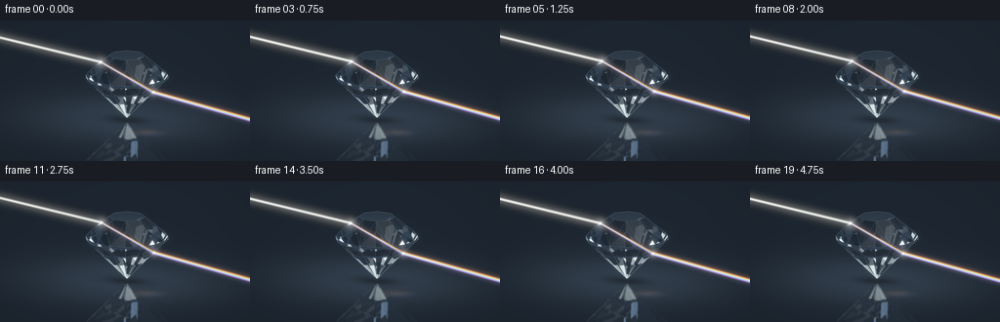
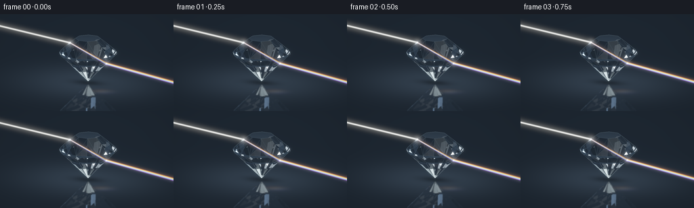

CODING AGENTS AS PIXEL WORLD MODELS
traex/GPT-6.1-Sol · phygen_089
点击播放 · 原生 RGB 像素
逐轮保存的候选
回放视频、检查图与代码变化。
每份候选均可单独播放。实际图片检查记录在下方工具轨迹中。
候选 01播放与检查图
点击播放 · 原生 RGB 像素


展开代码变化
--- 上一保存版本
+++ 本次保存版本
@@ -0,0 +1,280 @@
+"""Procedural RGB animation: collimated light refracted by a cut glass diamond.
+All geometry, ray intersections, Snell refraction, lighting and compositing are local.
+"""
+from pathlib import Path
+import json
+import math
+import numpy as np
+from PIL import Image, ImageDraw
+from scipy.spatial import ConvexHull
+from scipy.ndimage import gaussian_filter
+import artifact_io
+
+ROOT = Path(__file__).resolve().parent
+SPEC = json.loads((ROOT/'task_spec.json').read_text())
+W, H, SS = SPEC['width'], SPEC['height'], 3
+SW, SH = W*SS, H*SS
+
+def unit(a):
+ a=np.asarray(a, dtype=np.float64)
+ return a/np.maximum(np.linalg.norm(a,axis=-1,keepdims=True),1e-12)
+
+# A broad octagonal table, star facets, a sixteen-sided girdle and a deep pavilion.
+vertices=[]
+for y,r,n,phase in [(1.22,.80,8,np.pi/8),(.88,1.23,8,np.pi/8),(.33,1.78,16,0),(.23,1.78,16,0),(-1.55,.025,8,np.pi/8)]:
+ for k in range(n):
+ a=k*2*np.pi/n+phase
+ vertices.append([r*np.cos(a),y,r*np.sin(a)])
+vertices=np.asarray(vertices)
+hull=ConvexHull(vertices)
+# Deduplicate planar triangles into actual optical facets.
+planes=np.unique(np.round(hull.equations,9),axis=0)
+NORMALS=planes[:,:3]; OFFSETS=planes[:,3]
+
+CAM=np.array([5.1,3.25,11.0])
+TARGET=np.array([.0,-.05,0.0])
+FWD=unit(TARGET-CAM)
+RIGHT=unit(np.cross(FWD,[0,1,0])); UP=unit(np.cross(RIGHT,FWD))
+SPAN=10.8
+CX=130.0; CY=65.0
+xx,yy=np.meshgrid((np.arange(SW)+.5)/SS,(np.arange(SH)+.5)/SS)
+origins=CAM+(xx[...,None]-CX)*SPAN/W*RIGHT-(yy[...,None]-CY)*SPAN/W*UP
+rays=np.broadcast_to(FWD,origins.shape)
+
+def project(p):
+ p=np.asarray(p)
+ q=p-TARGET
+ return np.stack([CX+q@RIGHT*W/SPAN, CY-q@UP*W/SPAN],axis=-1)
+
+def hit(o,d):
+ """Vectorized convex-polyhedron slab intersection; supports inside rays."""
+ count=len(o)
+ near=np.full(count,-np.inf); far=np.full(count,np.inf)
+ ni=np.zeros(count,dtype=np.int32); fi=np.zeros(count,dtype=np.int32)
+ invalid=np.zeros(count,dtype=bool)
+ for k,(n,b) in enumerate(zip(NORMALS,OFFSETS)):
+ od=o@n+b; dd=d@n
+ t=-od/np.where(np.abs(dd)<1e-11,1e-11,dd)
+ entering=(dd< -1e-10)&(t>near)
+ exiting=(dd>1e-10)&(t<far)
+ near[entering]=t[entering]; ni[entering]=k
+ far[exiting]=t[exiting]; fi[exiting]=k
+ invalid |= (np.abs(dd)<1e-10)&(od>1e-7)
+ inside=near<1e-5
+ t=np.where(inside,far,near)
+ idx=np.where(inside,fi,ni)
+ valid=(far>=np.maximum(near,0))&(t>1e-5)&(~invalid)&np.isfinite(t)
+ return t,idx,valid,inside
+
+def environment(d):
+ # Dark photographic studio with large rectangular softbox reflections.
+ dy=d[:,1]
+ color=np.tile(np.array([.010,.018,.032]),(len(d),1))
+ color += np.exp(-((dy+.05)/.55)**2)[:,None]*np.array([.013,.024,.038])
+ panels=[(unit([-3,5,5]),unit([1,0,.6]),.19,.53,[2.8,3.3,3.7]),
+ (unit([4,2,-2]),unit([.4,0,1]),.075,.64,[1.65,2.25,2.9]),
+ (unit([-3,1,-5]),unit([1,0,-.6]),.08,.62,[.55,.9,1.4]),
+ (unit([.1,5,-.4]),unit([1,0,0]),.32,.2,[1.4,1.7,1.8])]
+ for center,side,wu,wv,col in panels:
+ side=unit(side-center*np.dot(side,center)); v=unit(np.cross(center,side))
+ u=d@side; vv=d@v; front=np.maximum(d@center,0)
+ shape=np.exp(-((u/wu)**8+(vv/wv)**8))*front**12
+ color+=shape[:,None]*np.array(col)
+ # Narrow warm strip, small cool pin lights, not a uniformly lit glass solid.
+ lamp=unit([2.4,3.0,4.1])
+ angle=1-np.clip(d@lamp,-1,1)
+ color+=np.exp(-angle/.0014)[:,None]*np.array([2.5,2.1,1.6])
+ return color
+
+FLOOR=-1.66
+
+def background(o,d):
+ col=environment(d)
+ # Matte-black tabletop has a soft reflection and a subtle local pool of light.
+ tt=(FLOOR-o[:,1])/np.where(abs(d[:,1])<1e-8,1e-8,d[:,1])
+ mask=(d[:,1]<-1e-6)&(tt>0)
+ p=o[mask]+tt[mask,None]*d[mask]
+ rad=(p[:,0]/4.1)**2+(p[:,2]/3.6)**2
+ floor=np.array([.007,.013,.022])+np.exp(-rad)[:,None]*np.array([.017,.027,.04])
+ shadow=np.exp(-((p[:,0]/1.55)**2+(p[:,2]/.95)**2)*2.2)
+ floor*=1-.62*shadow[:,None]
+ col[mask]=floor
+ return col
+
+def trace(o,d,depth=0,inside=None):
+ t,ids,valid,inside_auto=hit(o,d)
+ out=background(o,d)
+ if depth>=7 or not np.any(valid): return out
+ ind=np.flatnonzero(valid)
+ oo=o[ind]; dd=d[ind]; tt=t[ind]; p=oo+tt[:,None]*dd
+ inward=inside_auto[ind] if inside is None else inside[ind]
+ norm=NORMALS[ids[ind]].copy(); norm[inward]*=-1
+ cos=np.clip(-np.sum(dd*norm,axis=1),0,1)
+ eta=np.where(inward,1.515,1/1.515)
+ k=1-eta*eta*(1-cos*cos)
+ fres=.0419+(1-.0419)*(1-cos)**5
+ tir=k<0; fres[tir]=1
+ rd=unit(dd+2*cos[:,None]*norm)
+ # Reflection branches see actual other diamond facets; low-power branches
+ # terminate in their studio reflection to keep this deterministic and fast.
+ if depth<3:
+ rc=trace(p+rd*2e-5,rd,depth+1,inward)
+ else:
+ rc=background(p+rd*2e-5,rd)
+ mixed=rc*fres[:,None]
+ ok=~tir
+ if np.any(ok):
+ td=unit(eta[ok,None]*dd[ok]+(eta[ok]*cos[ok]-np.sqrt(k[ok]))[:,None]*norm[ok])
+ tc=trace(p[ok]+td*2e-5,td,depth+1,~inward[ok])
+ mixed[ok]+=tc*(1-fres[ok,None])
+ # Very weak absorption: clear glass rather than an opaque gemstone.
+ mixed*=np.where(inward[:,None],np.exp(-tt[:,None]*np.array([.010,.004,.002])),1)
+ out[ind]=mixed
+ return out
+
+def beam_path(origin,direction,ior):
+ """A true incident/transmitted ray, including total internal reflection."""
+ o=np.asarray(origin,float); d=unit(direction)
+ points=[o.copy()]; inside=False
+ for bounce in range(8):
+ t,idx,ok,_=hit(o[None],d[None])
+ if not ok[0]:
+ points.append(o+10*d); break
+ p=o+t[0]*d; points.append(p)
+ n=NORMALS[idx[0]].copy()
+ if inside: n=-n
+ cosine=-np.dot(d,n); eta=ior if inside else 1/ior
+ k=1-eta*eta*(1-cosine*cosine)
+ if k<0:
+ d=unit(d+2*cosine*n)
+ else:
+ d=unit(eta*d+(eta*cosine-np.sqrt(k))*n)
+ inside=not inside
+ o=p+d*1e-5
+ return np.array(points)
+
+def line_field(a,b,width,endpoint_soft=0):
+ a=np.asarray(a); b=np.asarray(b); v=b-a; vv=np.dot(v,v)
+ u=np.clip(((xx-a[0])*v[0]+(yy-a[1])*v[1])/max(vv,1e-8),0,1)
+ dist2=(xx-(a[0]+u*v[0]))**2+(yy-(a[1]+u*v[1]))**2
+ field=np.exp(-.5*dist2/(width*width))
+ if endpoint_soft:
+ field*=np.minimum(1,u*np.sqrt(vv)/endpoint_soft)*np.minimum(1,(1-u)*np.sqrt(vv)/endpoint_soft)
+ return field
+
+def glowpoint(p,core,col,amp=1):
+ d2=(xx-p[0])**2+(yy-p[1])**2
+ return (np.exp(-d2/(2*core*core))+.08*np.exp(-d2/(2*(core*5)**2)))[...,None]*np.array(col)*amp
+
+def render():
+ print('Tracing faceted glass...',flush=True)
+ flat_o=origins.reshape(-1,3); flat_d=rays.reshape(-1,3)
+ base=trace(flat_o,flat_d).reshape(SH,SW,3)
+ # The table carries a dim reflected silhouette, perspectively coherent.
+ tt=(FLOOR-flat_o[:,1])/flat_d[:,1]
+ p=flat_o+tt[:,None]*flat_d
+ refl=flat_d.copy(); refl[:,1]*=-1
+ rt,ri,rv,_=hit(p+refl*1e-4,refl)
+ use=(tt>0)&rv
+ if np.any(use):
+ mirror=np.zeros_like(flat_o)
+ mirror[use]=trace(p[use]+refl[use]*1e-4,refl[use])
+ mirror=gaussian_filter(mirror.reshape(SH,SW,3),sigma=(1.4,1.4,0))
+ mm=gaussian_filter(use.reshape(SH,SW).astype(float),1.2)
+ base=base*(1-.20*mm[...,None])+mirror*.20
+ # Very soft environmental bloom. Filmic exposure preserves glass highlights.
+ base+=gaussian_filter(np.maximum(base-.18,0),sigma=(3.0,3.0,0))*.10
+ base+=gaussian_filter(np.maximum(base-.65,0),sigma=(10,10,0))*.08
+ # Gentle facet edge reflections, not schematic wireframe edges.
+ edges={}
+ for tri in hull.simplices:
+ for i in range(3):
+ edge=tuple(sorted([int(tri[i]),int(tri[(i+1)%3])]))
+ edges[edge]=edges.get(edge,0)+1
+ edge_canvas=Image.new('L',(SW,SH),0); draw=ImageDraw.Draw(edge_canvas)
+ for (i,j) in edges:
+ a,b=vertices[[i,j]]
+ # Keep only true edges joining distinct geometric planes.
+ touching=[k for k,n in enumerate(NORMALS) if abs(a@n+OFFSETS[k])<1e-6 and abs(b@n+OFFSETS[k])<1e-6]
+ if len(touching)<2: continue
+ fronts=[k for k in touching if np.dot(NORMALS[k],FWD)<-.02]
+ if not fronts: continue
+ pts=project(np.array([a,b]))*SS
+ brightness=20 if len(fronts)==2 else 50
+ draw.line([tuple(pts[0]),tuple(pts[1])],fill=brightness,width=1)
+ ed=np.asarray(edge_canvas)/255.0
+ base+=ed[...,None]*np.array([.36,.55,.65])
+
+ rng=np.random.default_rng(29)
+ dust=np.column_stack([rng.uniform(4,252,42),rng.uniform(30,96,42)])
+ dust_strength=rng.uniform(.002,.018,42)
+ result=[]
+ spectra=[([1.,.075,.025],1.481),([1.,.32,.02],1.495),([1.,.78,.06],1.511),
+ ([.12,1.,.22],1.532),([.04,.66,1.],1.553),([.20,.19,1.],1.574),([.6,.10,1.],1.590)]
+ for frame in range(SPEC['frames']):
+ time=frame/SPEC['fps']
+ # A tiny slow vertical sweep changes the facets crossed by the beam.
+ y=.69+.038*np.sin(2*np.pi*time/5-.55)
+ direction=unit([1,-.105,.024])
+ origin=np.array([-8.0,y+8*.105,.06-8*.024])
+ paths=[beam_path(origin,direction,ior) for _,ior in spectra]
+ mid=beam_path(origin,direction,1.532)
+ if frame==0:
+ print('Central beam world path:',np.round(mid,3),flush=True)
+ print('Central beam screen path:',np.round(project(mid),2),flush=True)
+ light=np.zeros((SH,SW,3))
+ intensity=.80+.045*np.sin(time*1.9)
+ # White collimated incoming beam, with a faint illuminated air halo.
+ a,b=project(mid[:2]); field=line_field(a,b,.62)+.052*line_field(a,b,3.6)
+ light+=field[...,None]*np.array([1.9,1.92,1.82])*intensity
+ for (col,ior),path in zip(spectra,paths):
+ screen=project(path)
+ for k in range(1,len(screen)-1):
+ inside=(k<len(screen)-2)
+ wid=.45 if inside else .57
+ field=line_field(screen[k],screen[k+1],wid)
+ halo=line_field(screen[k],screen[k+1],2.4)
+ gain=.36 if inside else .64
+ light+=(field+.035*halo)[...,None]*np.array(col)*gain*intensity
+ entrance=project(mid[1]); exitp=project(mid[-2])
+ light+=glowpoint(entrance,.7,[1.0,1.05,1.07],1.35*intensity)
+ light+=glowpoint(exitp,.67,[.8,.95,1.0],1.25*intensity)
+ # Tiny lens diffraction spikes at the actual surface crossing points.
+ for pnt,gain in [(entrance,.24),(exitp,.19)]:
+ for delta in [np.array([3.6,0]),np.array([0,2.8])]:
+ light+=line_field(pnt-delta,pnt+delta,.16,2)[...,None]*np.array([.72,.9,1])*gain
+ # Extremely faint spectral light spills onto the tabletop below the gem.
+ for k,(col,_) in enumerate(spectra):
+ q=np.array([147+k*1.3,114+k*.4])
+ d2=((xx-q[0])/10)**2+((yy-q[1])/1.9)**2
+ light+=np.exp(-d2/2)[...,None]*np.array(col)*.009
+ # Slow, sparse airborne flecks reveal the illuminated path, not stars.
+ for j,pnt in enumerate(dust):
+ pnt=pnt+np.array([.36*time,.27*np.sin(time*.5+j)])
+ pathscreen=project(mid)
+ distance=min(np.linalg.norm(pnt-q) for q in pathscreen)
+ # Dust restricted to the beam's narrow atmosphere.
+ v=pathscreen[1]-pathscreen[0]
+ u=np.clip(np.dot(pnt-pathscreen[0],v)/np.dot(v,v),0,1)
+ dist=np.linalg.norm(pnt-(pathscreen[0]+u*v))
+ weight=np.exp(-dist*dist/60)
+ if weight>.03:
+ light+=glowpoint(pnt,.19,[.65,.78,.86],dust_strength[j]*weight)
+ image=base+light
+ image+=gaussian_filter(np.maximum(light-.10,0),sigma=(2.1,2.1,0))*.15
+ image+=gaussian_filter(np.maximum(light-.35,0),sigma=(7,7,0))*.045
+ # A mild photographic vignette; simple exponential highlight shoulder.
+ vignette=1-.18*((xx-130)**2/(165**2)+(yy-67)**2/(111**2))
+ image*=vignette[...,None]
+ display=1-np.exp(-image*1.22)
+ display=np.maximum(display,0)**(1/2.2)
+ rgb=np.uint8(np.clip(display*255+.5,0,255))
+ small=Image.fromarray(rgb).resize((W,H),Image.Resampling.LANCZOS)
+ result.append(np.asarray(small))
+ print(f'Rendered {frame+1}/{SPEC["frames"]}',flush=True)
+ frames=np.stack(result).astype(np.uint8)
+ artifact_io.save(frames,ROOT)
+ print('Saved RGB frames, pixels.npz, and index.html.',flush=True)
+
+if __name__=='__main__':
+ render()
可观测工具轨迹
实际执行的命令与返回图片。
命令 1exit 0
/bin/bash -lc 'ls -la && cat prompt.txt && cat GENERATION_RULES.md && cat task_spec.json'
命令 2exit 0
/bin/bash -lc 'cat artifact_io.py && cat player_template.html'
命令 3exit 0
/bin/bash -lc "python - <<'PY'
import numpy, PIL
print('numpy',numpy.__version__)
try:
import scipy
print('scipy',scipy.__version__)
except: pass
PY"命令 4exit 0
/bin/bash -lc "cat > generate.py <<'PY'
\"\"\"Procedural RGB animation: collimated light refracted by a cut glass diamond.
All geometry, ray intersections, Snell refraction, lighting and compositing are local.
\"\"\"
from pathlib import Path
import json
import math
import numpy as np
from PIL import Image, ImageDraw
from scipy.spatial import ConvexHull
from scipy.ndimage import gaussian_filter
import artifact_io
ROOT = Path(__file__).resolve().parent
SPEC = json.loads((ROOT/'task_spec.json').read_text())
W, H, SS = SPEC['width'], SPEC['height'], 3
SW, SH = W*SS, H*SS
def unit(a):
a=np.asarray(a, dtype=np.float64)
return a/np.maximum(np.linalg.norm(a,axis=-1,keepdims=True),1e-12)
# A broad octagonal table, star facets, a sixteen-sided girdle and a deep pavilion.
vertices=[]
for y,r,n,phase in [(1.22,.80,8,np.pi/8),(.88,1.23,8,np.pi/8),(.33,1.78,16,0),(.23,1.78,16,0),(-1.55,.025,8,np.pi/8)]:
for k in range(n):
a=k*2*np.pi/n+phase
vertices.append([r*np.cos(a),y,r*np.sin(a)])
vertices=np.asarray(vertices)
hull=ConvexHull(vertices)
# Deduplicate planar triangles into actual optical facets.
planes=np.unique(np.round(hull.equations,9),axis=0)
NORMALS=planes[:,:3]; OFFSETS=planes[:,3]
CAM=np.array([5.1,3.25,11.0])
TARGET=np.array([.0,-.05,0.0])
FWD=unit(TARGET-CAM)
RIGHT=unit(np.cross(FWD,[0,1,0])); UP=unit(np.cross(RIGHT,FWD))
SPAN=10.8
CX=130.0; CY=65.0
xx,yy=np.meshgrid((np.arange(SW)+.5)/SS,(np.arange(SH)+.5)/SS)
origins=CAM+(xx[...,None]-CX)*SPAN/W*RIGHT-(yy[...,None]-CY)*SPAN/W*UP
rays=np.broadcast_to(FWD,origins.shape)
def project(p):
p=np.asarray(p)
q=p-TARGET
return np.stack([CX+q@RIGHT*W/SPAN, CY-q@UP*W/SPAN],axis=-1)
def hit(o,d):
\"\"\"Vectorized convex-polyhedron slab intersection; supports inside rays.\"\"\"
count=len(o)
near=np.full(count,-np.inf); far=np.full(count,np.inf)
ni=np.zeros(count,dtype=np.int32); fi=np.zeros(count,dtype=np.int32)
invalid=np.zeros(count,dtype=bool)
for k,(n,b) in enumerate(zip(NORMALS,OFFSETS)):
od=o@n+b; dd=d@n
t=-od/np.where(np.abs(dd)<1e-11,1e-11,dd)
entering=(dd< -1e-10)&(t>near)
exiting=(dd>1e-10)&(t<far)
near[entering]=t[entering]; ni[entering]=k
far[exiting]=t[exiting]; fi[exiting]=k
invalid |= (np.abs(dd)<1e-10)&(od>1e-7)
inside=near<1e-5
t=np.where(inside,far,near)
idx=np.where(inside,fi,ni)
valid=(far>=np.maximum(near,0))&(t>1e-5)&(~invalid)&np.isfinite(t)
return t,idx,valid,inside
def environment(d):
# Dark photographic studio with large rectangular softbox reflections.
dy=d[:,1]
color=np.tile(np.array([.010,.018,.032]),(len(d),1))
color += np.exp(-((dy+.05)/.55)**2)[:,None]*np.array([.013,.024,.038])
panels=[(unit([-3,5,5]),unit([1,0,.6]),.19,.53,[2.8,3.3,3.7]),
(unit([4,2,-2]),unit([.4,0,1]),.075,.64,[1.65,2.25,2.9]),
(unit([-3,1,-5]),unit([1,0,-.6]),.08,.62,[.55,.9,1.4]),
(unit([.1,5,-.4]),unit([1,0,0]),.32,.2,[1.4,1.7,1.8])]
for center,side,wu,wv,col in panels:
side=unit(side-center*np.dot(side,center)); v=unit(np.cross(center,side))
u=d@side; vv=d@v; front=np.maximum(d@center,0)
shape=np.exp(-((u/wu)**8+(vv/wv)**8))*front**12
color+=shape[:,None]*np.array(col)
# Narrow warm strip, small cool pin lights, not a uniformly lit glass solid.
lamp=unit([2.4,3.0,4.1])
angle=1-np.clip(d@lamp,-1,1)
color+=np.exp(-angle/.0014)[:,None]*np.array([2.5,2.1,1.6])
return color
FLOOR=-1.66
def background(o,d):
col=environment(d)
# Matte-black tabletop has a soft reflection and a subtle local pool of light.
tt=(FLOOR-o[:,1])/np.where(abs(d[:,1])<1e-8,1e-8,d[:,1])
mask=(d[:,1]<-1e-6)&(tt>0)
p=o[mask]+tt[mask,None]*d[mask]
rad=(p[:,0]/4.1)**2+(p[:,2]/3.6)**2
floor=np.array([.007,.013,.022])+np.exp(-rad)[:,None]*np.array([.017,.027,.04])
shadow=np.exp(-((p[:,0]/1.55)**2+(p[:,2]/.95)**2)*2.2)
floor*=1-.62*shadow[:,None]
col[mask]=floor
return col
def trace(o,d,depth=0,inside=None):
t,ids,valid,inside_auto=hit(o,d)
out=background(o,d)
if depth>=7 or not np.any(valid): return out
ind=np.flatnonzero(valid)
oo=o[ind]; dd=d[ind]; tt=t[ind]; p=oo+tt[:,None]*dd
inward=inside_auto[ind] if inside is None else inside[ind]
norm=NORMALS[ids[ind]].copy(); norm[inward]*=-1
cos=np.clip(-np.sum(dd*norm,axis=1),0,1)
eta=np.where(inward,1.515,1/1.515)
k=1-eta*eta*(1-cos*cos)
fres=.0419+(1-.0419)*(1-cos)**5
tir=k<0; fres[tir]=1
rd=unit(dd+2*cos[:,None]*norm)
# Reflection branches see actual other diamond facets; low-power branches
# terminate in their studio reflection to keep this deterministic and fast.
if depth<3:
rc=trace(p+rd*2e-5,rd,depth+1,inward)
else:
rc=background(p+rd*2e-5,rd)
mixed=rc*fres[:,None]
ok=~tir
if np.any(ok):
td=unit(eta[ok,None]*dd[ok]+(eta[ok]*cos[ok]-np.sqrt(k[ok]))[:,None]*norm[ok])
tc=trace(p[ok]+td*2e-5,td,depth+1,~inward[ok])
mixed[ok]+=tc*(1-fres[ok,None])
# Very weak absorption: clear glass rather than an opaque gemstone.
mixed*=np.where(inward[:,None],np.exp(-tt[:,None]*np.array([.010,.004,.002])),1)
out[ind]=mixed
return out
def beam_path(origin,direction,ior):
\"\"\"A true incident/transmitted ray, including total internal reflection.\"\"\"
o=np.asarray(origin,float); d=unit(direction)
points=[o.copy()]; inside=False
for bounce in range(8):
t,idx,ok,_=hit(o[None],d[None])
if not ok[0]:
points.append(o+10*d); break
p=o+t[0]*d; points.append(p)
n=NORMALS[idx[0]].copy()
if inside: n=-n
cosine=-np.dot(d,n); eta=ior if inside else 1/ior
k=1-eta*eta*(1-cosine*cosine)
if k<0:
d=unit(d+2*cosine*n)
else:
d=unit(eta*d+(eta*cosine-np.sqrt(k))*n)
inside=not inside
o=p+d*1e-5
return np.array(points)
def line_field(a,b,width,endpoint_soft=0):
a=np.asarray(a); b=np.asarray(b); v=b-a; vv=np.dot(v,v)
u=np.clip(((xx-a[0])*v[0]+(yy-a[1])*v[1])/max(vv,1e-8),0,1)
dist2=(xx-(a[0]+u*v[0]))**2+(yy-(a[1]+u*v[1]))**2
field=np.exp(-.5*dist2/(width*width))
if endpoint_soft:
field*=np.minimum(1,u*np.sqrt(vv)/endpoint_soft)*np.minimum(1,(1-u)*np.sqrt(vv)/endpoint_soft)
return field
def glowpoint(p,core,col,amp=1):
d2=(xx-p[0])**2+(yy-p[1])**2
return (np.exp(-d2/(2*core*core))+.08*np.exp(-d2/(2*(core*5)**2)))[...,None]*np.array(col)*amp
def render():
print('Tracing faceted glass...',flush=True)
flat_o=origins.reshape(-1,3); flat_d=rays.reshape(-1,3)
base=trace(flat_o,flat_d).reshape(SH,SW,3)
# The table carries a dim reflected silhouette, perspectively coherent.
tt=(FLOOR-flat_o[:,1])/flat_d[:,1]
p=flat_o+tt[:,None]*flat_d
refl=flat_d.copy(); refl[:,1]*=-1
rt,ri,rv,_=hit(p+refl*1e-4,refl)
use=(tt>0)&rv
if np.any(use):
mirror=np.zeros_like(flat_o)
mirror[use]=trace(p[use]+refl[use]*1e-4,refl[use])
mirror=gaussian_filter(mirror.reshape(SH,SW,3),sigma=(1.4,1.4,0))
mm=gaussian_filter(use.reshape(SH,SW).astype(float),1.2)
base=base*(1-.20*mm[...,None])+mirror*.20
# Very soft environmental bloom. Filmic exposure preserves glass highlights.
base+=gaussian_filter(np.maximum(base-.18,0),sigma=(3.0,3.0,0))*.10
base+=gaussian_filter(np.maximum(base-.65,0),sigma=(10,10,0))*.08
# Gentle facet edge reflections, not schematic wireframe edges.
edges={}
for tri in hull.simplices:
for i in range(3):
edge=tuple(sorted([int(tri[i]),int(tri[(i+1)%3])]))
edges[edge]=edges.get(edge,0)+1
edge_canvas=Image.new('L',(SW,SH),0); draw=ImageDraw.Draw(edge_canvas)
for (i,j) in edges:
a,b=vertices[[i,j]]
# Keep only true edges joining distinct geometric planes.
touching=[k for k,n in enumerate(NORMALS) if abs(a@n+OFFSETS[k])<1e-6 and abs(b@n+OFFSETS[k])<1e-6]
if len(touching)<2: continue
fronts=[k for k in touching if np.dot(NORMALS[k],FWD)<-.02]
if not fronts: continue
pts=project(np.array([a,b]))*SS
brightness=20 if len(fronts)==2 else 50
draw.line([tuple(pts[0]),tuple(pts[1])],fill=brightness,width=1)
ed=np.asarray(edge_canvas)/255.0
base+=ed[...,None]*np.array([.36,.55,.65])
rng=np.random.default_rng(29)
dust=np.column_stack([rng.uniform(4,252,42),rng.uniform(30,96,42)])
dust_strength=rng.uniform(.002,.018,42)
result=[]
spectra=[([1.,.075,.025],1.481),([1.,.32,.02],1.495),([1.,.78,.06],1.511),
([.12,1.,.22],1.532),([.04,.66,1.],1.553),([.20,.19,1.],1.574),([.6,.10,1.],1.590)]
for frame in range(SPEC['frames']):
time=frame/SPEC['fps']
# A tiny slow vertical sweep changes the facets crossed by the beam.
y=.69+.038*np.sin(2*np.pi*time/5-.55)
direction=unit([1,-.105,.024])
origin=np.array([-8.0,y+8*.105,.06-8*.024])
paths=[beam_path(origin,direction,ior) for _,ior in spectra]
mid=beam_path(origin,direction,1.532)
if frame==0:
print('Central beam world path:',np.round(mid,3),flush=True)
print('Central beam screen path:',np.round(project(mid),2),flush=True)
light=np.zeros((SH,SW,3))
intensity=.80+.045*np.sin(time*1.9)
# White collimated incoming beam, with a faint illuminated air halo.
a,b=project(mid[:2]); field=line_field(a,b,.62)+.052*line_field(a,b,3.6)
light+=field[...,None]*np.array([1.9,1.92,1.82])*intensity
for (col,ior),path in zip(spectra,paths):
screen=project(path)
for k in range(1,len(screen)-1):
inside=(k<len(screen)-2)
wid=.45 if inside else .57
field=line_field(screen[k],screen[k+1],wid)
halo=line_field(screen[k],screen[k+1],2.4)
gain=.36 if inside else .64
light+=(field+.035*halo)[...,None]*np.array(col)*gain*intensity
entrance=project(mid[1]); exitp=project(mid[-2])
light+=glowpoint(entrance,.7,[1.0,1.05,1.07],1.35*intensity)
light+=glowpoint(exitp,.67,[.8,.95,1.0],1.25*intensity)
# Tiny lens diffraction spikes at the actual surface crossing points.
for pnt,gain in [(entrance,.24),(exitp,.19)]:
for delta in [np.array([3.6,0]),np.array([0,2.8])]:
light+=line_field(pnt-delta,pnt+delta,.16,2)[...,None]*np.array([.72,.9,1])*gain
# Extremely faint spectral light spills onto the tabletop below the gem.
for k,(col,_) in enumerate(spectra):
q=np.array([147+k*1.3,114+k*.4])
d2=((xx-q[0])/10)**2+((yy-q[1])/1.9)**2
light+=np.exp(-d2/2)[...,None]*np.array(col)*.009
# Slow, sparse airborne flecks reveal the illuminated path, not stars.
for j,pnt in enumerate(dust):
pnt=pnt+np.array([.36*time,.27*np.sin(time*.5+j)])
pathscreen=project(mid)
distance=min(np.linalg.norm(pnt-q) for q in pathscreen)
# Dust restricted to the beam's narrow atmosphere.
v=pathscreen[1]-pathscreen[0]
u=np.clip(np.dot(pnt-pathscreen[0],v)/np.dot(v,v),0,1)
dist=np.linalg.norm(pnt-(pathscreen[0]+u*v))
weight=np.exp(-dist*dist/60)
if weight>.03:
light+=glowpoint(pnt,.19,[.65,.78,.86],dust_strength[j]*weight)
image=base+light
image+=gaussian_filter(np.maximum(light-.10,0),sigma=(2.1,2.1,0))*.15
image+=gaussian_filter(np.maximum(light-.35,0),sigma=(7,7,0))*.045
# A mild photographic vignette; simple exponential highlight shoulder.
vignette=1-.18*((xx-130)**2/(165**2)+(yy-67)**2/(111**2))
image*=vignette[...,None]
display=1-np.exp(-image*1.22)
display=np.maximum(display,0)**(1/2.2)
rgb=np.uint8(np.clip(display*255+.5,0,255))
small=Image.fromarray(rgb).resize((W,H),Image.Resampling.LANCZOS)
result.append(np.asarray(small))
print(f'Rendered {frame+1}/{SPEC[\"frames\"]}',flush=True)
frames=np.stack(result).astype(np.uint8)
artifact_io.save(frames,ROOT)
print('Saved RGB frames, pixels.npz, and index.html.',flush=True)
if __name__=='__main__':
render()
PY
OPENBLAS_NUM_THREADS=1 python generate.py"命令 5exit 0
/bin/bash -lc "python - <<'PY'
from pathlib import Path
from PIL import Image
import numpy as np
p=Path('.')
f=np.stack([np.asarray(Image.open(p/'frames'/f'{i:02d}.png')) for i in range(20)])
a=np.load('pixels.npz')['pixels']
assert f.shape==(20,144,256,3) and f.dtype==np.uint8
assert a.shape==(144,256,20)
assert all((p/name).is_file() for name in ['generate.py','index.html','pixels.npz','inspection.png','transition_check.png'])
print('Validated:',f.shape, f.dtype)
print('Brightness mean / max:',f.mean().round(2),f.max())
print('Mean temporal change:', np.abs(np.diff(f.astype(float),axis=0)).mean().round(3))
print('Output artifact sizes:', {n:(p/n).stat().st_size for n in ['pixels.npz','index.html','inspection.png']})
PY"保存候选 1 份；完成命令 5 次；可验证图片返回 0 张。原始 API 响应与完整日志保留在本地。